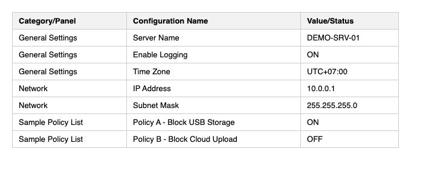
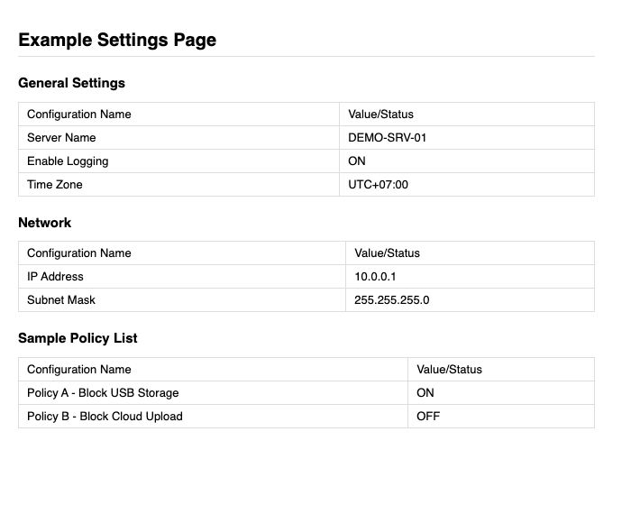
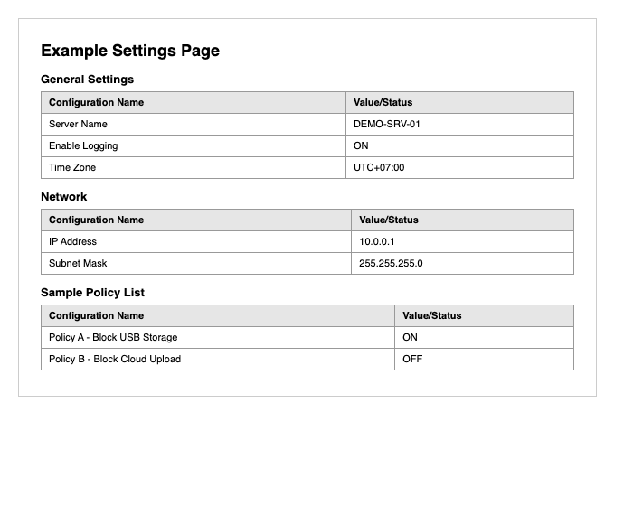

This extension exports configuration data from your Netwrix Endpoint Protector admin console to CSV, Markdown, or PDF, and dashboard charts to PNG, so you don't have to manually copy settings out of the UI.
chrome://extensions in Chrome.| Control | What it does |
|---|---|
| Export Current Page | Exports whatever page is currently open in the active tab - use this for pages not listed below, or for an individual item's detail/edit screen (e.g. one specific Content Aware Policy). |
| Format selector (CSV / Markdown / PDF) | Choose the output format before clicking any export button. Applies to Export Current Page and every section button. |
| Section buttons (e.g. Global Rights, Mail Settings) | Automatically navigates to that page for you first, then exports it in the chosen format. One click instead of clicking through the sidebar yourself. |
| Dashboard PNG Export buttons (1 Week / 2 Weeks / 1 Month) | Navigates to the chosen dashboard, sets that date range, and downloads a PNG screenshot of the full dashboard. See section 4. |
Every section button navigates to that exact sidebar page and exports it in your chosen format (CSV/Markdown/PDF).
| Sidebar section | Pages |
|---|---|
| Dashboard | System Status, Effective Rights |
| Device Control | Devices, Users, Groups, Global Rights, Global Settings |
| Content Aware Protection | Content Aware Policies (List), Deep Packet Inspection |
| eDiscovery | Policies and Scans |
| Denylists and Allowlists | Denylists, Allowlists, URL Categories |
| Enforced Encryption | EasyLock |
| Offline Temporary Password | Offline Temporary Password, OTP List |
| Reports and Analysis | Logs Report, File Tracing, Content Aware Report, Admin Actions, SCIM Provisioning Logs, Online Computers, Online Users, Online Devices, Statistics |
| Alerts | System Alerts, Device Control Alerts, Content Aware Alerts, EasyLock Alerts |
| Directory Services | Microsoft Active Directory, Azure Active Directory, SCIM API Configuration |
| Appliance | Server Information, Server Maintenance, SIEM Integrations |
| System Maintenance | Exported Entities, System Snapshots, Audit Log Backup, External Storage, System Backup, File Shadows Repository, EPP Clients Migration |
| System Configuration | Server Update, Client Software, Client Software Upgrade, Client Uninstall, System Administrators, Administrators Groups, System Departments, System Settings, System Security, Mail Settings |
| System Parameters | Device Types and Notifications, Contextual Detection, Advanced Scanning Exceptions, Rights, Events |
Not listed here? Navigate to it yourself in Netwrix EPP, then click Export Current Page - that works on any page.
The Dashboard PNG Export section has 1 Week / 2 Weeks / 1 Month buttons for the General, Device Control, and Content Aware dashboards. Each button navigates to that dashboard, sets the date range, waits for the charts to redraw, and downloads a PNG of the full dashboard.
chrome.debugger, the same mechanism browser-automation tools use. While a PNG export runs (a few seconds), Chrome shows a "started debugging this browser" infobar - this is normal and expected.
Examples below use placeholder sample data, not real configuration.
Three columns - Category/Panel, Configuration Name, Value/Status. Each row is one setting, checkbox, dropdown, or table record found on the page. Opens cleanly in Excel/Sheets.

Grouped by panel, with a table per panel - readable as plain text or rendered by any Markdown viewer (GitHub, Obsidian, VS Code preview, etc.).

A formatted document with the page title, a bordered table per panel, and page breaks as needed. List pages (e.g. Devices, System Administrators) get a real multi-column table matching the page's own columns instead - switching to landscape automatically when there are more than 5 columns.

chrome://extensions.
The section buttons are defined in popup.html as data-path="Sidebar Item,Sub Item" - a comma-separated list of sidebar labels to click through in order. If you want a new page added, note its exact sidebar path and it can be added the same way.